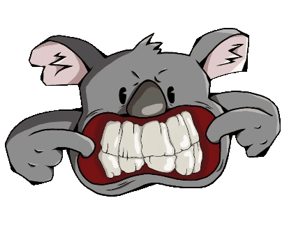

Marcel.devDesenvolvedor Front-End com experiência em React, TypeScript e integração com APIs REST, criando interfaces responsivas e focadas em uma boa experiência de uso.
Minha experiência começou com suporte técnico e implantação de sistemas ERP, onde desenvolvi bastante prática com SQL, análise de problemas, testes, documentação e entendimento de processos. Com o tempo, fui me aproximando do desenvolvimento e passei a focar no front-end, trabalhando principalmente com React, TypeScript e Tailwind CSS.
Além da parte técnica, desenvolvi experiência trabalhando em equipe e me comunicando com diferentes áreas para entender necessidades, organizar demandas e acompanhar processos e projetos. Tenho facilidade para aprender novas tecnologias, gosto de compartilhar conhecimento e também já atuei no apoio e treinamento de novos colaboradores, ajudando na adaptação aos sistemas, processos e atividades da equipe.
Plataforma desenvolvida para conectar pessoas interessadas em apoiar projetos educacionais e organizações sociais. O projeto utiliza React, JavaScript e Tailwind CSS, com foco em responsividade, componentes reutilizáveis e uma experiência simples e intuitiva em diferentes dispositivos.